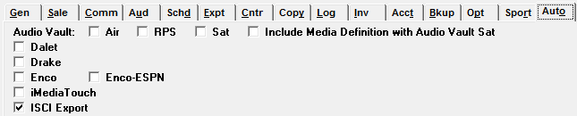
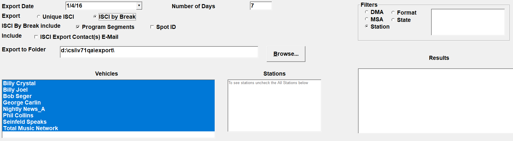
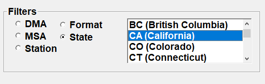

ISCI Export
The Affiliate ISCI Export is used to send commercial audio providers a list of the ISCIs to air. Each vehicle can be designated with a different type of audio provider. Each vehicle can be designated with a different type of audio provider and/or delivery method.
ISCI Setup
Prior to setup
- Are you going to export Unique ISCI (ie Mr Masters, etc.) or ISCI by Break?
- If ISCI By Break, each day must be run individually
- Is the content provider giving you Program ID numbers?
- If Yes in Site Options -> Automation, turn on X-Digital by Break to access toggle in Vehicle -> Options -> Interface -> program ID field.
- Are the program ID numbers numeric or alphanumeric?
- If alphanumeric in Vehicle -> Interface – X Digital Avail form: change the toggle to be H#B#. This will let you define the alphanumeric, otherwise you can only define numeric
Traffic
You must activate the ISCI Export in Traffic -> Site Options -> Automation.

In Traffic -> Vehicle Options -> Producer, you must enter the Commercial Content Provider’s Information. This only needs to be defined if you are using Unique ISCI’s.
If you have been given a Program ID from your Audio Provider, enter it in Traffic -> Vehicle Options -> Interface. Click the ISCI toggle until it says H#B#, this will allow the Program ID field to be used and an alphanumeric code to be entered. If you do not, you can only enter numbers in the Vehicle ID field.
On the Vehicle Options screen, Interface tab, for each vehicle that will use the ISCI export, the setting “Export ISCI by Pledge (unchecked means by feed)” must be set. This setting is used to determine whether spots are grouped under a separate E command by each unique pledge time or by each unique feed time. This setting is also used – along with the internal spot ID - to determine if a spot is considered a duplicate or not, as the general rule is that duplicate spots with the same time are ignored by the export, but whether the time is considered the same depends on whether the pledge time or feed time setting is used, which is important for agreements with mutiple airplays. For example, if station KAAA-FM has multiple airplays, and the ISCI export is by pledge, and the pledge times for the duplicated airplays are unique, then the multiple airplays will be included on the export. For example, there could be a 6pm fed break, with two airplays, where airplay 1 is pledged to air at 6p and airplay 2 is pledged to air at 6:30p, and in that case, because the pledge time setting is being used, and the pledge times are unique for both breaks, then spots from both breaks would be shown. As another example, where station KAAA-FM has multiple airplays, and the ISCI is by pledge, but the pledge times are the same – for example, that 6p fed break with two airplays, but both are pledged to air at 6pm – then only airplay 1 would be shown, because the pledge times (and internal spot IDs) are the same. On the other hand, if KAAA-FM had multiple airplays, and the ISCI is by feed, if the feed times are the same for both airplay 1 and 2, then only airplay 1 will be included.
Affiliate
Station -> Personnel
The people in the Station -> Personnel screen with email addresses and that have ISCI Export checked on will be included in the output if “Include ISCI Export Contacts Email” is checked on during export generation.
Export Selectivity
- Unique ISCI: Produces a list of all the generic and split regional ISCI codes unique to each affiliate. If using Unique ISCI, two additional options appear:
- By Vehicle: Which lists all the generic and regional ISCI codes unique to a vehicle for a span of dates. As stated above, if using this method, you must have a producer defined in the Traffic -> Vehicles -> Options -> Producer tab .
- By Vehicle and Station: Which lists all the generic and regional ISCI codes unique to each affiliate of a vehicle for a span of dates.
- ISCI by Break: Produces a list of each spot to air for each station in log order with the generic or split copy, in break and position number order. If using ISCI by Break two additional options appears:
- Program Segments: If program segments should be included with the export, one will be placed before the first break, and one after each other break in the vehicle. If the last break contains nothing but Promos, no program segment will be generated after it
- Spot ID: This will send the internal spot ID number with the export, allowing Counterpoint to update exact aired times
- ISCI Export Contact(s) Email: The Aff/Email Contact from the Stations Screen -> Personnel tab will be included on the export.
- Export to folder: Select the folder to which you want to save your Files (generally CSI\Prod\Export)
ISCI Export File Name
The export is given the name of the vehicle, followed by mmddyy, for example John_&_Jeff_063010.
- If you stay in the ISCI Export screen after generating an export and generate a second export, the initial export is appended with the output of the subsequent export (Unique ISCI only).
- Example: An export is generated for CST stations with the name “John_&_Jeff_063010” and a subsequent export is generated for the same vehicle for the MST stations, the second export will be appended to the original “John_&_Jeff_063010” file. You will have one file with the CST and MST ISCI information
- If you exit the ISCI Export screen between generating exports, it will overwrite any output files with the same name.
- Example: An export is generated for CST stations for vehicle John_&_Jeff_063010. You exit the screen, then go back into the screen and create another export for the MST stations for the vehicle John and Jeff. The original file is replaced by the new John_&_Jeff_081010. You will have one file with the MST ISCI information
Mr. Master Export Structure
Naming Structure
The rule for naming the files is ccccc_mmddyy_L.TXT, where ccccc is the abbreviated name of the content provider, mmddyy is the date the file was generated, and L means the file is in the LOG format. The file will be stored in the location specified as the Export directory in the AFFILIAT.INI file, typically, CSI\Prod\Export.
File Contents
The file contents are ASCI records, with each record terminated by a carriage return/line feed. The types of records are distinguished by the first character of each entry.
- A records – the date of the log being exported
- B records - the name(s) of the vehicles whose logs are being generated, plus the word “New” or “Revised”
- C records – the call letters of each station which is affiliated that week with the specified vehicle
- D records – the audio that needs to be sent to each station, identified by the placement code, ISCI code, and advertiser name
- The placement code is comprised of three parts – hour, break, and position. The hours are numbers for each show from 01 to 24. The break numbers start at 01 for each hour. The position numbers start at 01 for each break
- E records – The E record includes the year, week number, day, XDS Program Code (from Vehicle Options), a dash, the letter H followed by the hour number, the letter S followed by the segment number, and finally the word “Show”.
- F records – the email address of the Affiliate contact at the station (ISCI export setting checked on the Stations screen Personnel tab).
Output File
The placement codes, ISCI codes, and advertiser names in the D records will be separated by Tab characters. To make sure a user does not accidentally enter a tab character in the ISCI code or advertiser name, Counterpoint will scan for them, and replace any found with blanks. (Note – in the following examples, the Tab characters in the B and D records are represented by a ¶, since the Tab isn’t printable).
This example is for a file containing 2 dates for 2 Vehicles. The George Carlin Vehicle is 2 hours long and contains 2 commercial breaks, one at quarter past the hour, and one at three-quarters past the hour, with each break holding 2 minutes (which could be a mixture of 4 30s”, 2 60s”, or 2 30s” and 1 60”). It has 3 affiliates. Harry Chapin Vehicle is 30 minutes long, and contains three 15” breaks, each of which holds one 15” spot. It has 2 affiliates. George Carlin is being sent for the first time for this week. Harry Chapin is a revision, so it is being re-sent. Note that all stations carry the same spots for each vehicle, except the very first spot for George Carlin on KAAA-FM, which is a regional spot to be run only on KAAA-FM.
A11/30/09
BGeorge Carlin¶GCC
CKAAA-FM
E0101¶0949-GCC
D010101¶ahsh 7474¶Sears
D010102¶djfjd 4934-434¶ATT
E0102¶0949-GCC
D010201¶cnfnr 40304¶Ac Delco
D010202¶vnfnr 49583¶Savon
D010203¶djsj 29394¶Ford
E0103¶0949-GCC
Fjohn.jones@kaaa.com
CKBBB-FM
D010101¶ahsh 3923¶Sears
D010102¶djfjd 4934-434¶ATT
D010201¶cnfnr 40304¶Ac Delco
D010202¶vnfnr 49583¶Savon
D010203¶djsj 29394¶Ford
CKCCC-FM
D010101¶ahsh 3923¶Sears
D010102¶djfjd 4934-434¶ATT
D010201¶cnfnr 40304¶Ac Delco
D010202¶vnfnr 49583¶Savon
D010203¶djsj 29394¶Ford
BHarry Chapin¶Revised
CKAAA-FM
D010101¶ahsh 3923¶Sears
D010201¶djfjd 4934-434¶ATT
D010301¶cnfnr 40304¶Ac Delco
CKBBB-FM
D010101¶ahsh 3923¶Sears
D010201¶djfjd 4934-434¶ATT
D010301¶cnfnr 40304¶Ac Delco
A12/01/09
BGeorge Carlin¶New
CKAAA-FM
D010101¶ahsh 7474¶Sears
D010102¶djfjd 4934-434¶ATT
D010201¶cnfnr 40304¶Ac Delco
D010202¶vnfnr 49583¶Savon
D010203¶djsj 29394¶Ford
CKBBB-FM
D010101¶ahsh 3923¶Sears
D010102¶djfjd 4934-434¶ATT
D010201¶cnfnr 40304¶Ac Delco
D010202¶vnfnr 49583¶Savon
D010203¶djsj 29394¶Ford
CKCCC-FM
D010101¶ahsh 3923¶Sears
D010102¶djfjd 4934-434¶ATT
D010201¶cnfnr 40304¶Ac Delco
D010202¶vnfnr 49583¶Savon
D010203¶djsj 29394¶Ford
BHarry Chapin¶New
CKAAA-FM
D010101¶ahsh 3923¶Sears
D010201¶djfjd 4934-434¶ATT
D010301¶cnfnr 40304¶Ac Delco
CKBBB-FM
D010101¶ahsh 3923¶Sears
D010201¶djfjd 4934-434¶ATT
D010301¶cnfnr 40304¶Ac Delco
Station Filter
On version 7.1 and above, station filters are available on the export screen and can be used to filter the station list. The following filters are available: DMA, Format, MSA, State, and Station.

When selecting the DMA, Format, MSA, or State filter, the box to the right shows the available DMAs, Formats, MSAs, or States. (Note: the Station’s Mailing Address State is the state that is used.)

Select one or more choices from the selection box to filter the list of stations by the selected criteria. By default, the Station filter is selected. When the Station filter is selected, the list box on the right has no effect. (Use the regular Station list box to select or de-select stations when using the Station filter.)
On version 7.1 and above, by default, the station list does not show any stations and instead shows the text “To see stations, uncheck All Stations below”. When the “all stations” checkbox is checked on, the list of stations is simply not shown, but it either includes all stations, or if the station list is filtered, those stations that meet the filter criteria (and that apply to the selected vehicles). To see the stations in the station list, uncheck the “all stations” checkbox.
If the station list is filtered using one of the available filters, then only those stations will be exported. For example, if Vehicle A is selected, and the New York DMA filter is used to filter the station list for Vehicle A, when exporting, only the stations defined with the New York DMA and that are affiliated with Vehicle A for the selected date span will be exported.